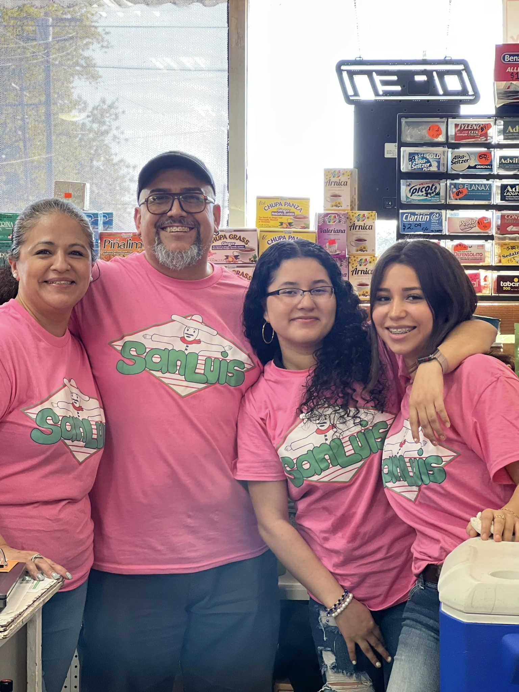

San Luis Grocery Store is small family owned business that was open 30 years ago! It was open by Mr. Luis Gerardo Vazquez and his wife Mrs. Hortencia Vazquez Gloria. They immigrated from Mexico to the US. The store has been a part of the Kenosha community for a over 3 decades and has been featured in the local news 3 times now. But the objective of the Store has always been to help other especially our commuity and to serve good food to put a smile on every customer.
